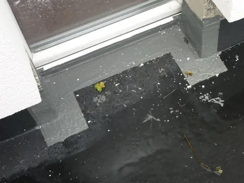
Drzwi tarasowe
Wywinięcie izolacji na próg i ościeża.
Szczelnie tam, gdzie zwykle przecieka: przy drzwiach tarasowych, wpustach, balustradach i przejściach instalacyjnych. Membrany EPDM Resitrix i płynne tworzywa Triflex, południowa Polska.
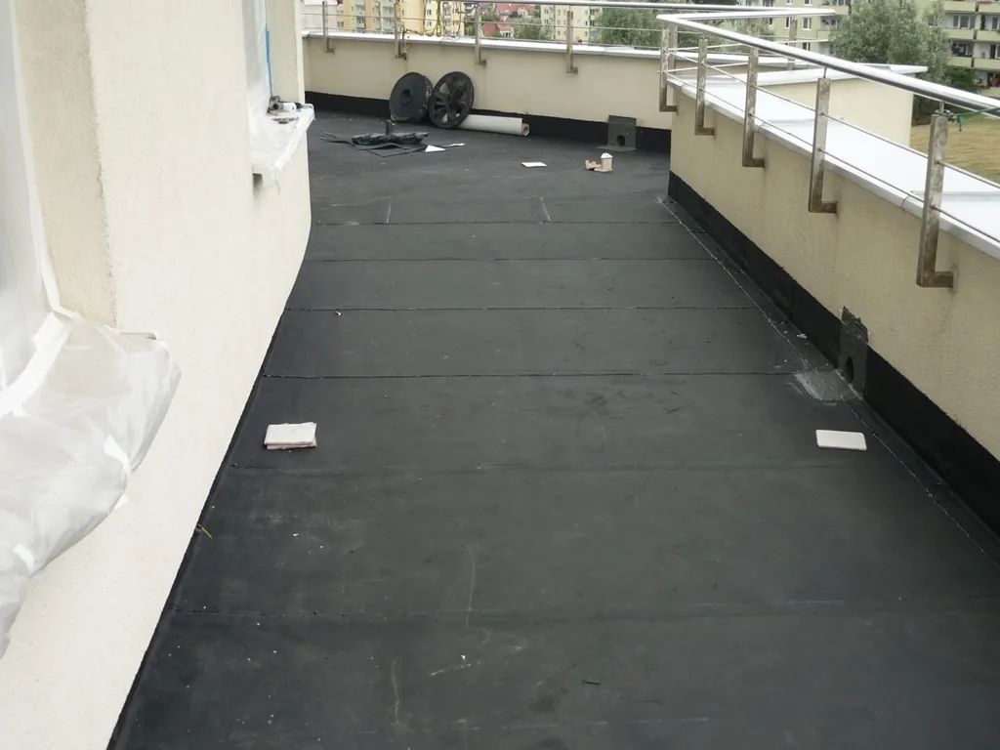
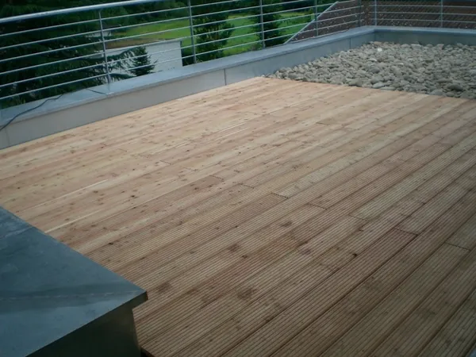
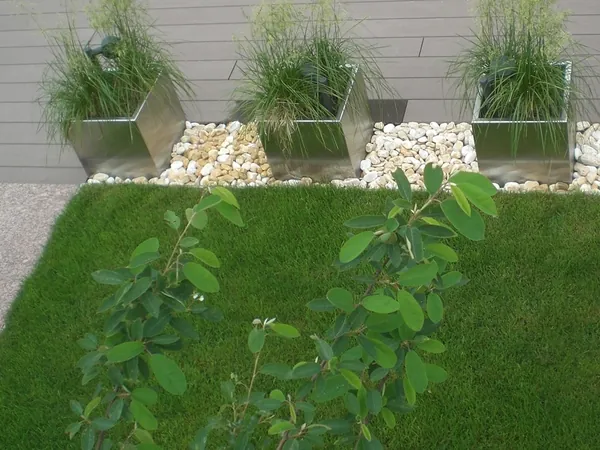
Od lat budujemy tarasy, duże i małe, nisko i bardzo wysoko. Przy niemal każdym zleceniu wracał ten sam problem: przecieki. Dlatego zajęliśmy się izolacjami wodoszczelnymi. Pracujemy według zasad dobrego rzemiosła i standardów z Niemiec, Austrii i Szwajcarii.
Także tarasy nad ogrzewanymi pomieszczeniami: izolacja na warstwie spadkowej, drzwi tarasowe i słupki balustrad.
Dachy użytkowe, zielone intensywne i ekstensywne, dach odwrócony z izolacją termiczną.
Izolacja stropów, dylatacji i wpustów, nawierzchnie jezdne i ciągi piesze na dachach.
Przejścia instalacyjne, wpusty dachowe i attykowe, świetliki, klapy dymowe, wsporniki i fundamenty masztów.
Taras drewniany, kompozytowy, kamień, żwir, dach zielony albo bezszwowa nawierzchnia Triflex.
Weryfikujemy zakres remontu i rozwiązania detali, zanim powstaną kosztowne błędy.
Płytki zwykle odpadają przez to, co dzieje się pod nimi. Tak wyglądają detale z naszych budów, zanim przykryje je nawierzchnia.

Wywinięcie izolacji na próg i ościeża.
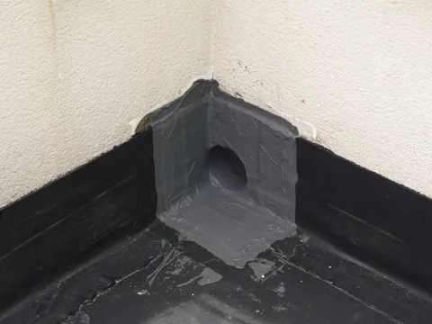
Wpust attykowy wklejony w membranę.
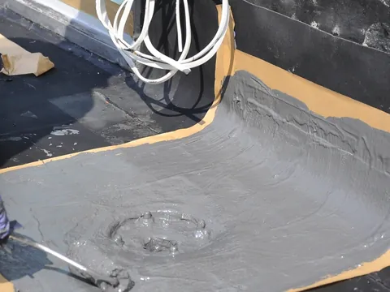
Płynne tworzywo wokół wpustu dachowego.
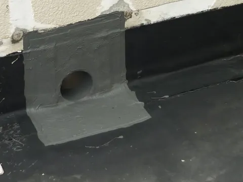
Uszczelnienie przelewu awaryjnego.
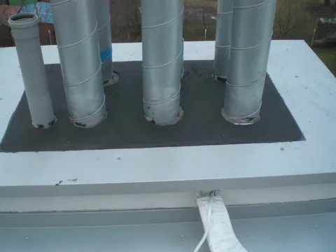
Kominki wentylacyjne przez dach.
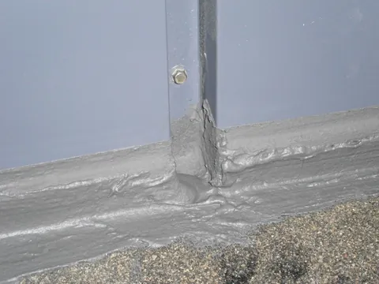
Izolacja mocowania słupka do płyty.
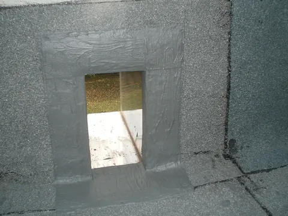
Obróbka otworu przy połączeniu ze ścianą.
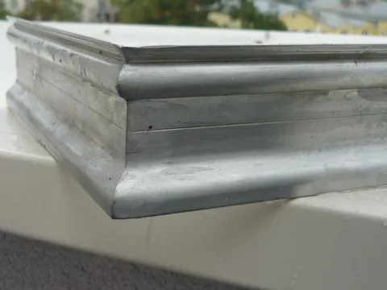
Obróbka krawędzi płyty i attyki.
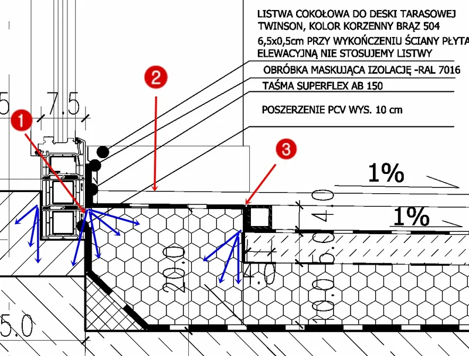
Nie ma dwóch takich samych tarasów. Z doświadczenia wiemy, że najtańszą opcją jest kontakt z nami już na etapie projektu. Najczęstsze błędy, które poprawiamy:
Cenowo nie odbiegają od porównywalnych jakością bitumów.
membrany EPDM
Izolacja tarasów, balkonów i dachów płaskich pod płytę jastrychową, nawierzchnię drewnianą, żwir albo dach zielony.
płynne tworzywa sztuczne PMMA
Bezszwowa izolacja detali: wpustów, przejść i obróbek. W wersji z warstwą nawierzchniową jest od razu nawierzchnią tarasu albo balkonu.
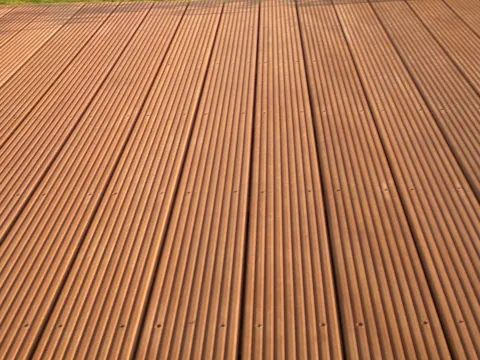
Nawierzchnia z desek na izolacji.
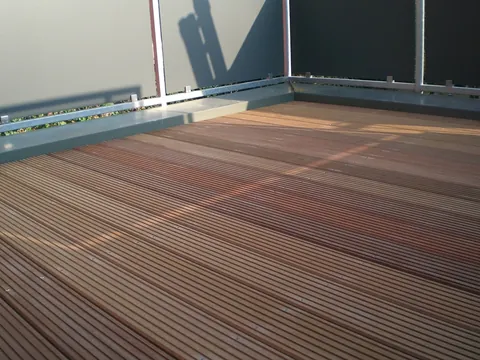
Deski na dachu użytkowym.
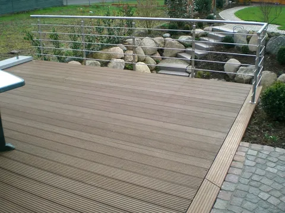
Deski z obrzeżem z kostki.
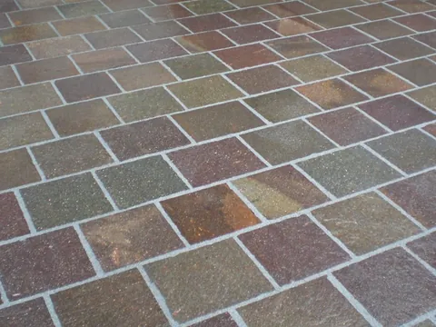
Kamień na izolowanym tarasie.
Działamy w południowej Polsce: Kraków, Kielce, Radom, Warszawa, Opole, Katowice, Tarnów, Rzeszów, Bielsko-Biała, Zakopane, Krynica, Sanok. Przy większych zleceniach na terenie całego kraju.
biuro@hydroizolacje.info.pltel. 501 288 771